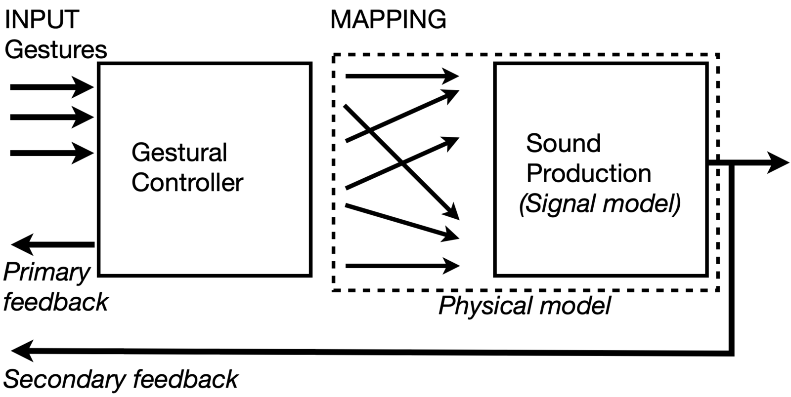
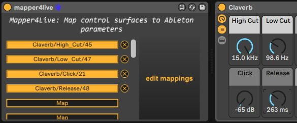
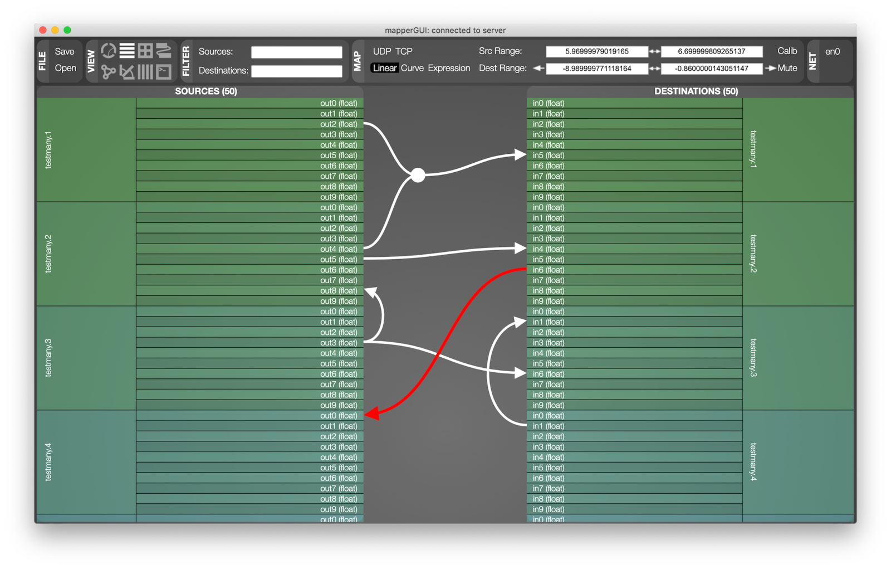

Mapper4Live: Using Control Structures to Embed Complex Mapping Tools into Ableton Live
Abstract
This paper presents Mapper4Live, a software plugin made for the popular digital audio workstation software Ableton Live. Mapper4Live exposes Ableton’s synthesis and effect parameters on the distributed libmapper signal mapping network, providing new opportunities for interaction between software and hardware synths, audio effects, and controllers. The plugin’s uses and relevance in research, music production and musical performance settings are explored, detailing the development journey and ideas for future work on the project.
Author Keywords
mapping, gesture, controller, Ableton Live, Max for Live
CCS Concepts
•Applied computing → Sound and music computing; •Software and its engineering → Software libraries and repositories;
Introduction
Modern software music production environments, also known as digital audio workstations (DAWs), contain built-in processing, sequencing, and synthesis tools that are made available to the user. These systems can be used to build complex signal chains incorporating a wide variety of control parameters to generate output audio as part of sequenced compositions, digital musical instruments, or some combination thereof. In addition to the manipulation of internal structures within the DAW, it is possible to incorporate external hardware and software devices such as input controllers and synthesizers to extend the functionality of the system. While adoption of standard protocols such as MIDI and OSC allow connectivity between these components for the purposes of data exchange, it is often necessary to define additional layers of processing and translation, commonly referred to as mapping [1], as it has a strong impact on the behavior of the system.
This paper presents Mapper4Live1, a mapping plugin that bridges control parameters between Ableton Live and libmapper, a cross platform distributed mapping framework. This connection combines the existing sequencing and synthesis features of Ableton Live with the dynamic mapping capabilities of libmapper. First, the motivation for additional mapping capabilities in this context is presented, followed by the implementation of Mapper4Live. Several scenarios afforded by this new interface are presented to explore its potential for supporting artistic creation. Finally, future development plans are explored, including the integration of similar tools into other production environments.
Background and Motivation
The importance of mapping
The simplest type of mapping between musical signals is a one-to-one connection, where an input signal directly drives an output. More complex relationships between signals such as convergent mappings (many-to-one) can result in a parameter depending on multiple inputs to compute its value. Divergent mappings (one-to-many) result in one signal controlling multiple audio parameters at once. Figure 1, presented in [2], visualizes the relationship between the gestural controller and the sound producer. Mapping can also be explored through a functional lens by defining mathematical expressions (functions) relating one or more input signal(s) to an output [3]. To relate gestural signals to audio signals using more meaningful representations, intermediate mapping layers can also be created [4].
Connecting gestural controllers to sound sources with complex mappings can provide noticeable performance benefits when compared to one-to-one mappings [1]. Currently, support for user-designed convergent and functional mappings is not implemented in most commercial production environments, often restricting users to linearly scaled one-to-one connections.


Relationship between gestural controllers and sound sources, adapted from [2].
The state of mapping tools
Mapping frameworks
Several standards and libraries have emerged for sending musical signals between gestural controllers and sound processors. The MIDI standard is perhaps the most popular protocol for sending simple musical signals between devices. Though it’s adoption is widespread, MIDI lacks flexibility for data types and ranges outside of its standard though, which can restrict the user’s ability to express their sonic intents [5].
The networking protocol OSC allows the design of custom namespaces for signals. This freedom is an attractive feature for researchers using complex gestural data, but results in one-off implementations for devices that are unable to be used for other purposes. A few libraries have been created to address some of OSC’s limitations such as device connections [6] or signal discovery2, but still rely on the user to find their own method of creating dynamic mappings to devices. The original authors of OSC imagined that compatibility would be achieved through the use of common schemas defining signal names and data types.
In development since 2007, the open-source library libmapper3 [7][8] aims to resolve the issues of compatibility in a different way. Instead of devices agreeing on a common signal representation, each device defines the signals that it sends and receives independently. Once registered with libmapper, devices, signals and other metadata can be discovered through multicast networking, and signal datastreams can be freely connected with libmapper handling any necessary translation, type coercion, and vector truncation or padding so that the destination always receives messages it knows how to process. Runtime connections between signals (called “maps”) also embed configurable processing and other metadata, and can be managed over the network using OSC messaging or an arbitrary number of session managers such as webmapper [9]. Users of the libmapper API4 are encouraged to use “strong semantics” and real units when designing device and signal representations; if they choose to define ranges for signals, new maps will default to linear scaling. Its support for complex mappings and signal abstractions lead to libmapper being the protocol of choice for Mapper4Live.
Embedding mapping tools in Ableton Live
Ableton Live5 is a well-known commercial music production and performance program. It presents a number of developer friendly tools for creating devices that can interact with the production session, most of which are unique to Ableton Live. Few DAWs offer similar tools to developers, therefore Ableton Live was chosen as the production environment for this project despite its paid licensing source model.
Ableton’s Live Object Model
Ableton Live uniquely presents its internal structure to developers in the form of its Live Object Model (LOM). The LOM is hierarchically structured to organize tracks, software devices and audio parameters in the production session and can be accessed using Max6 objects. State variables such as the currently selected track or audio parameter can be accessed via the LOM to track the user’s interactions with the program. Parameters from synthesis and effect plugins are contained in this hierarchy as well, giving Max for Live developers the ability to control other devices in the session.
These features provide a number of useful tools for mapping frameworks. In the case of libmapper, this results in the ability to view and control the parameter spaces of all audio devices in the production session, giving mapping designers a multitude of new synthesis and audio effect signals that can be connected to gestural controllers.
Bringing communities together
A partnership between Ableton and Cycling 74, the company that maintains and develops Max, embeds a version of Max into Ableton Live called Max for Live7 that lets developers create their own software devices in Ableton Live using the Max framework. Functionally the same as software plugins hosted by Ableton Live, Max for Live devices can produce and process audio as well as MIDI. These hackable devices also have access to the LOM, giving developers access to other plugins and parameters in the production session. This intended extensibility of the Ableton Live platform provides a natural entry point to connect with libmapper, and thus Mapper4Live was created as a Max for Live device.
Functionality in other DAWs
Mapper4Live is built as a Max for Live device, meaning that it is only compatible in Ableton Live and would need a different implementation to work in other DAWs. Max for Live is unique in that it exposes the session parameters, and most popular DAWs do not offer similar tools to developers. However, a similar approach can be done with other DAWs as well. For example, researchers at the University of Bordeaux are exploring integrating libmapper into the structure of Ossia Score [10], an open-source DAW. This addition to Score would give similar functionality to Mapper4Live, letting users expose libmapper signals from the production session.
Technical Design
Prerequisite work
Ableton Live, as well as Max for Live runs on Windows and MacOS, while libmapper was originally built and extensively tested under Unix environments (MacOS and Linux), with Max external objects available for MacOS. It would be ideal for our Mapper4Live interface to operate on both platforms that Ableton and Max supports, and in this section we present updates to the existing components necessary: the main libmapper library as well as the Max/MSP external objects8.
While in theory it had been possible to build libmapper on Windows using the MinGW toolchain, any applications compiled this way would not work with Windows-based applications developed using the Visual Studio compiler and run-time. This meant for example that the Max external objects, built in Windows via the Max SDK in Visual Studio, would not be supported. As such, we made changes to libmapper and subsequently the Max/Pure data externals. The most notable changes include the removal of variable length array definitions9, which are not supported by the Visual Studio C compiler. In addition to enabling our development of Mapper4Live, these updates to libmapper provided better compatibility of the library including support for native Windows applications, as well as Max external objects in Windows. With these changes, it was possible to embed libmapper, via the Max external object, into a Max for Live device, and provide the fundamental interfaces to implement our Mapper4Live plugin.
Development Process
The publicly available LFO (low frequency oscillator) Max for Live device10 was used as a reference for retrieving information from the LOM because of its parameter mapping functionality. Max for Live devices are inherently editable, allowing the parameter mapping subpatches in the LFO device to be copied and tweaked for the new plugin. The live.path Max object can be used to detect changes in LOM variables, and is used by Mapper4Live to listen to changes in the currently selected parameter when adding new signals. Once a new parameter is selected to be added to Mapper4Live, the live.object Max object retrieves information about the parameter including its name, parent device, value range and id within the session. The parameter’s name, parent and id is formed into a unique hierarchical address for the libmapper network, while the range allows libmapper to automatically normalize incoming values for the signal. Finally, the device creates a mappable libmapper signal for the parameter on the network.
Interface design
The plugin operates by users first clicking an open Map button, and then clicking on an Ableton Live parameter in the session that they wish to connect with libmapper. Once created, the signals will appear on the libmapper network under a mapper.x device, x being the instance number of the object. This allows users to create multiple instances to separate signals between tracks if intended. Clicking a Map button’s corresponding “X” button to its right will remove the signal from the network, deleting any connections containing the signal as well.
Although Mapper4Live could exist as an audio effect device, it was created as a MIDI effect device in order to always place it at the beginning of the chain for visibility (seen in Figure 2). The device can be placed on any track without any functional changes and can create signals from any other track’s parameters.


Mapper4Live user interface in Ableton Live
Mapping Interfaces
Once signals are created using Mapper4Live, webmapper [9] (seen in Figure 3) can be opened via the “edit mappings” button to manage connections. Webmapper offers several options for connection visualization and editing, and supports preset saving to easily load up complex configurations. Users can also connect mappings on the network with libmapper’s command line functions, but webmapper provides much more user-friendly controls for the connections.


Webmapper user interface
Potential Scenarios
In this section, we present several imagined mapping and interaction scenarios enabled by the Mapper4Live device. The affordances of the LOM for mapping tools connects several communities including mapping and instrument designers, Max for Live developers and Ableton Live producers. Each of these groups has a potential role and interest in the design, development or use of complex mappings, and the integration into Ableton Live produces many opportunities for exploration into the new features.
Scenario 1: Ableton Live as the mapping destination
Our first scenario considers Ableton Live as a destination for control signals.
Alice is an experienced user of Ableton Live, and is always looking for new ways to control her software synthesizers and live audio effects. In her studio she uses traditional control surfaces with sliders and knobs for putting "physical handles" on software parameters, and enabling bimanual, simultaneous control over multiple parameters. She is familiar with MIDI, MPE, and OSC, and has experimented with Max4Live and Connection Kit11.
Alice loads the Mapper4Live device into Live, and uses the webmapper GUI (launched from Live) to explore the LOM, connect various input devices to Live parameters, and play along with some sequenced material she was working on previously. In quick succession, she tries a variety of input devices she has in the studio: her laptop trackpad, a game controller, hand tracking using a Leap Motion12, and a Sensel Morph13. She is able to record the live data from the devices as automation so she can use the same fingers to control other parameters. She starts to plan a live set, and decide which parameters will be automated and which would be mapped live.
Alice knows that she is fully capable of creating custom software bridges to import streaming data from these devices into Live, but Mapper4Live allows her to stay "in the flow" during studio sessions, quickly trying new devices, experimenting with mapping connections, and tweaking the data processing to match her particular way of playing the controllers. She is planning to create a custom hardware interface, perhaps prototyped using a platform like Probatio [11].
Bob is a data scientist and musician interested in data sonification. His friend Alice told him about her experiments with Mapper4Live, and when he checks out the libmapper website he notices that there are language bindings for Python—his programming language of choice for data processing and analysis! At their next session together, Bob uses Python to load public datasets and declare their fields as libmapper signals. Together, Alice and Bob design a mapping from Bob's datasets to Ableton Live parameters, and use the signals published by Ableton Link14 to synchronize playback. They spend the rest of the evening jamming along with automation driven by elevation data from a LiDAR survey of their city.
Scenario 2: Ableton Live as the mapping source
Our second scenario concerns using Ableton Live as the source for mapping connections.
Charly is an Ableton Live producer and a synthesizer fanatic. They love to collect and use hardware and software synthesizers, and have been getting into low-level media programming in Pure Data15 and SuperCollider16 in Linux. They can use Ableton Live to stream MIDI over the network to their Linux laptop or an embedded computer such as Bela17, but to use MIDI they have to choose seemingly arbitrary mappings between control change numbers and synthesis properties. By using Mapper4Live and declaring libmapper signals in their Max patches and SuperCollider programs, they make the programs mutually discoverable, and can design mappings between named signals instead of remembering and interpreting control change codes.
Li is a composer who usually uses Max to create complex pieces for traditional instruments and "live electronics". Typically, their pieces involve a series of scenes or presets, each of which has associated media and mappings from audio features to effects parameters. Li enjoys using Max, but finds using queue lists for stepping between scenes limiting and wants to explore using more continuous transitions instead of discrete state changes. He knows he can use ramps or preset interpolators in Max, but decides to try using a dedicated sequencer environment instead. Using Mapper4Live, Li creates convergent maps for relationships that he wants to evolve over time, with Ableton Live providing one of the map inputs for each. He starts by sequencing simple ramps that imitate preset interpolation, and quickly iterates toward more complex modulation.
Charly and Li meet at a workshop on networked music creation, and during discussion discover that they have both been using Mapper4Live. Realizing that they could recreate distributed control topologies by mapping streams of data between their two instances of Ableton Live, they make plans to explore playing together.
Scenario 3: Mapping within Ableton Live
Our final scenario explores the implications of using Mapper4Live solely for mapping within Ableton Live. In this case, we are obviously duplicating existing capabilities, since automation data can be copied, modified and reassigned to different parameters. Bringing libmapper into the mix does more than assign semantic labels to MIDI events and control change messages, however. We do not have the scope here to explore the full set of processing capabilities supported by libmapper's expression interpreter, but in brief it supports:
user-specified linear, exponential and logarithmic scaling, with UI support for designing curves
arithmetic, comparison, logical, conditional and bitwise operators
referencing past values of a source or destination signal, enabling FIR and IIR filters and live looping [12]
referencing ranges or individual elements of vector signals
using timestamps in expressions, enabling downsampling and time-dependent modulation such as control-rate LFOs
convergent maps with up to eight source signals
reducing expressions that operate over source signals, vector elements, historical samples, and signal instances [13].
These additions to the capabilities of Ableton Live provide a number of opportunities for practical exploration of complex mapping features inside of a music production environment. Combined with the expanding capabilities of gestural controllers, Mapper4Live prepares the stage for both researchers and musicians to experiment with advanced mappings in their own works.
Conclusion
This paper presents Mapper4Live, a plugin in Ableton Live that allows complex mappings between input devices and Ableton Live parameters. This tool aims to accelerate the audio signal side of mapping research by utilizing commercial plugins instead of custom patches for synthesis and effects. Introducing the libmapper mapping framework into a production program results in a variety of opportunities for instrument designers, Ableton Live producers and Max for Live developers. Embedding complex mapping tools into Ableton Live opens up a conceptual discussion of further methods the framework can be used in live performance and music production contexts.
Acknowledgments
The authors would like to thank Travis West for their valuable insights and comments, as well as Paul Buser and Robin Vandebrouck for their help in preparing demo videos with the plugin.
Ethics Statement
This work is partially supported by a Discovery grant from the Natural Sciences and Engineering Council of Canada to the last author. There are no observed conflicts of interest.
Footnotes
- ↩
- ↩
- ↩
libmapper is written in C, with bindings for a growing list of languages and environments including C++, C#, Python, Java, Processing, Max, Pure Data, and SuperCollider.
↩- ↩
- ↩
- ↩
- ↩
- ↩
- ↩
- ↩
- ↩
- ↩
- ↩
- ↩
- ↩
- ↩
Citations
- ↩Hunt, A., Wanderley, M. M., & Paradis, M. (2002). The Importance of Parameter Mapping in Electronic Instrument Design. Proceedings of the International Conference on New Interfaces for Musical Expression, 149–154.
- ↩Wanderley, M. M. (2001). Gestural control of music. Proceedings of the International Workshop on Human Supervision and Control in Engineering and Music, 632–644.
- ↩Caramiaux, B., Françoise, J., Schnell, N., & Bevilacqua, F. (2014). Mapping Through Listening. Computer Music Journal, 38(3), 34–48.
- ↩Hunt, A., & Wanderley, M. M. (2002). Mapping performer parameters to synthesis engines. Organised Sound, 7(2), 97–108.
- ↩Hunt, A., Wanderley, M. M., & Paradis, M. (2002). The Importance of Parameter Mapping in Electronic Instrument Design. Proceedings of the International Conference on New Interfaces for Musical Expression, 149–154.
- ↩Moore, F. R. (1988). The Dysfunctions of MIDI. Computer Music Journal, 12(1), 19–28.
- ↩Dannenberg, R. B., & Chi, Z. (2016). O2: Rethinking open sound control. Proceedings of the International Conference on Computer Music, 494.
- ↩Malloch, J., Sinclair, S., & Wanderley, M. M. (2015). Distributed tools for interactive design of heterogeneous signal networks. Multimedia Tools and Applications, 74(15), 5683–5707.
- ↩Malloch, J., Sinclair, S., & Wanderley, M. M. (2013). Libmapper (A Library for Connecting Things). Extended Abstracts on Human Factors in Computing Systems, 3087–3090.
- ↩Wang, J., Malloch, J., Sinclair, S., Wilansky, J., & Wanderley, M. M. (2019). Webmapper: A Tool for Visualizing and Manipulating Mappings in Digital Musical Instruments. Proceedings of the International Conference on Computer Music Multidisciplinary Research, 12.
- ↩Celerier, J.-M., Baltazar, P., Bossut, C., Vuaille, N., Couturier, J.-M., & Desainte-Catherine, M. (2015, May). OSSIA: Towards a unified interface for scoring time and interaction. Proceedings of the International Conference on Technologies for Music Notation and Representation.
- ↩Wang, J., Malloch, J., Sinclair, S., Wilansky, J., & Wanderley, M. M. (2019). Webmapper: A Tool for Visualizing and Manipulating Mappings in Digital Musical Instruments. Proceedings of the International Conference on Computer Music Multidisciplinary Research, 12.
- ↩Calegario, F., Wanderley, M. M., Huot, S., Cabral, G., & Ramalho, G. (2017). A Method and Toolkit for Digital Musical Instruments: Generating Ideas and Prototypes. IEEE MultiMedia, 24(1), 63–71.
- ↩Frisson, C., Bredholt, M., Malloch, J., & Wanderley, M. M. (2021). MapLooper: Live-looping of Distributed Gesture-to-Sound Mappings. Proceedings of the International Conference on New Interfaces for Musical Expression.
- ↩Malloch, J., Sinclair, S., & Wanderley, M. M. (2018). Generalized Multi-Instance Control Mapping for Interactive Media Systems. IEEE MultiMedia, 25(1).